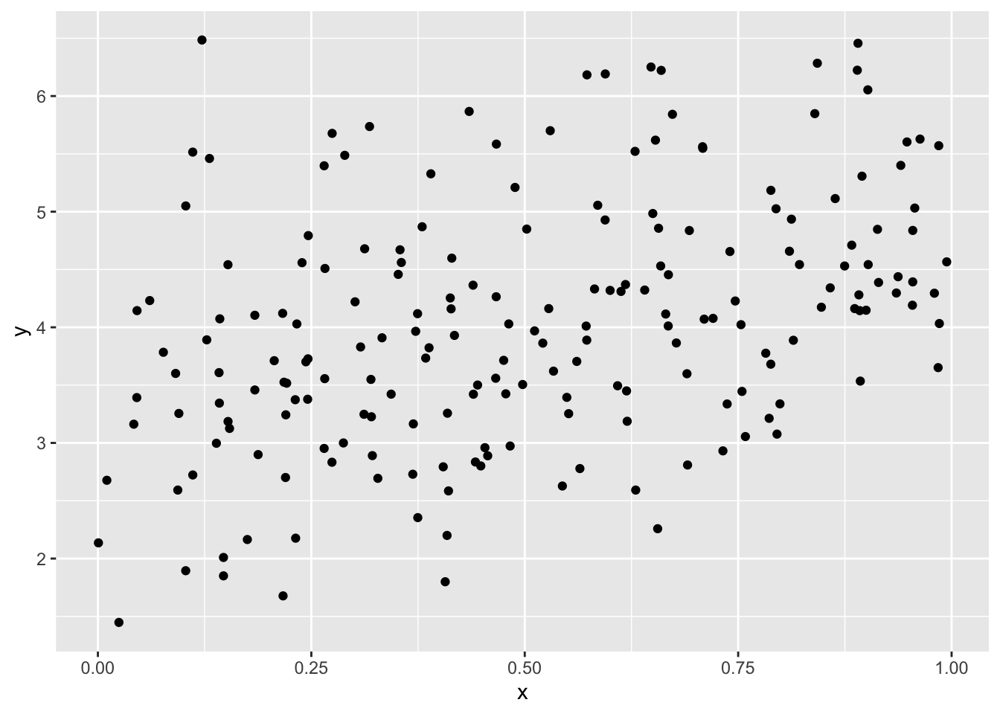
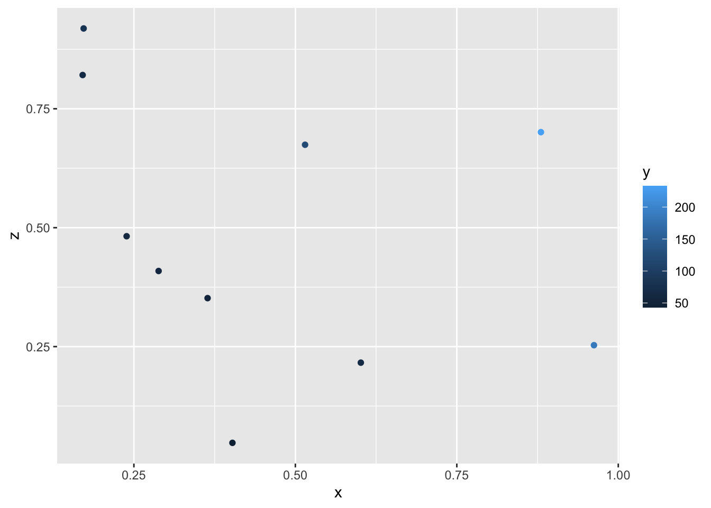

Based on the vignette: https://inlabru-org.github.io/inlabru/articles/zip_zap_models.html
1 Using multiple likelihoods
The first step is to understand how inlabru deals with multiple likelihoods. Let’s follow the basic example in the documentation for inlabru::like as follows:
library(inlabru)
Loading required package: fmesher
require(dplyr, quietly =TRUE)
Attaching package: 'dplyr'
The following objects are masked from 'package:stats':
filter, lag
The following objects are masked from 'package:base':
intersect, setdiff, setequal, union
require(ggplot2, quietly =TRUE)require(patchwork, quietly =TRUE)set.seed(123)n1 <-200n2 <-10x1 <-runif(n1)x2 <-runif(n2)z2 <-runif(n2)y1 <-rnorm(n1, mean =2* x1 +3)y2 <-rpois(n2, lambda =exp(2* x2 + z2 +3))df1 <-data.frame(y = y1, x = x1)df2 <-data.frame(y = y2, x = x2, z = z2)ggplot(df1, aes(x = x, y = y)) +geom_point()

ggplot(df2, aes(x = x, y = z, col = y)) +geom_point()

Single likelihood models and inference using bru are done via:
cmp1 <- y ~-1+Intercept(1) + xfit1 <-bru(cmp1, family ="gaussian", data = df1)summary(fit1)
inlabru version: 2.10.1.9000
INLA version: 24.01.29
Components:
Intercept: main = linear(1), group = exchangeable(1L), replicate = iid(1L)
x: main = linear(x), group = exchangeable(1L), replicate = iid(1L)
Likelihoods:
Family: 'gaussian'
Data class: 'data.frame'
Predictor: y ~ .
Time used:
Pre = 0.684, Running = 0.298, Post = 0.0307, Total = 1.01
Fixed effects:
mean sd 0.025quant 0.5quant 0.975quant mode kld
Intercept 3.245 0.145 2.960 3.245 3.530 3.245 0
x 1.547 0.252 1.052 1.547 2.042 1.547 0
Model hyperparameters:
mean sd 0.025quant 0.5quant
Precision for the Gaussian observations 1.06 0.106 0.863 1.06
0.975quant mode
Precision for the Gaussian observations 1.28 1.05
Deviance Information Criterion (DIC) ...............: 561.71
Deviance Information Criterion (DIC, saturated) ....: 205.46
Effective number of parameters .....................: 2.99
Watanabe-Akaike information criterion (WAIC) ...: 561.66
Effective number of parameters .................: 2.89
Marginal log-Likelihood: -300.06
is computed
Posterior summaries for the linear predictor and the fitted values are computed
(Posterior marginals needs also 'control.compute=list(return.marginals.predictor=TRUE)')
cmp2 <- y ~-1+Intercept(1) + x + zfit2 <-bru(cmp2, family ="poisson", data = df2)summary(fit2)
inlabru version: 2.10.1.9000
INLA version: 24.01.29
Components:
Intercept: main = linear(1), group = exchangeable(1L), replicate = iid(1L)
x: main = linear(x), group = exchangeable(1L), replicate = iid(1L)
z: main = linear(z), group = exchangeable(1L), replicate = iid(1L)
Likelihoods:
Family: 'poisson'
Data class: 'data.frame'
Predictor: y ~ .
Time used:
Pre = 0.575, Running = 0.219, Post = 0.00698, Total = 0.801
Fixed effects:
mean sd 0.025quant 0.5quant 0.975quant mode kld
Intercept 2.960 0.112 2.740 2.960 3.179 2.960 0
x 1.964 0.111 1.747 1.964 2.182 1.964 0
z 1.152 0.132 0.894 1.152 1.411 1.152 0
Deviance Information Criterion (DIC) ...............: 75.80
Deviance Information Criterion (DIC, saturated) ....: 13.19
Effective number of parameters .....................: 3.00
Watanabe-Akaike information criterion (WAIC) ...: 76.31
Effective number of parameters .................: 2.76
Marginal log-Likelihood: -52.97
is computed
Posterior summaries for the linear predictor and the fitted values are computed
(Posterior marginals needs also 'control.compute=list(return.marginals.predictor=TRUE)')
A joint model has two likelihoods, which are set up using the like function. The union of effects of both models gives the components needed to run bru
lik1 <-like("gaussian", formula = y ~ x + Intercept, data = df1)lik2 <-like("poisson", formula = y ~ x + z + Intercept, data = df2)jcmp <-~ x + z +Intercept(1)jfit <-bru(jcmp, lik1, lik2)
Compare the estimates:
p1 <-ggplot() +gg(fit1$summary.fixed, bar =TRUE) +ylim(0, 4) +ggtitle("Model 1")p2 <-ggplot() +gg(fit2$summary.fixed, bar =TRUE) +ylim(0, 4) +ggtitle("Model 2")pj <-ggplot() +gg(jfit$summary.fixed, bar =TRUE) +ylim(0, 4) +ggtitle("Joint model")p1 / p2 / pj